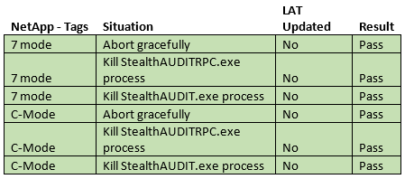

Summary: FSAA: Utilize Restore privileges when preserving LAT. Added ability to preserve the LAT of files when scanning for Metadata tags and Sensitive Data.
Issue:
THIS HOTFIX REQUIRES AT LEAST HOTFIX SDD_8.0_003 TO BE INSTALLED IF USING
SDD:
- SAFS-3003/20609
Customers
- Honeywell International
Cumulative List of fixes included since Service Pack:
- SAFS-1582 9969 - FSAA | Timeout while compressing SQLites on proxy
- SAFS-2324 Investigate FSAA functionality when there is lack of access to IPC$
- SAFS-2359 16217 - Error Getting Activity Count from TBL_FSAC_ActivityEvents: Overflow while converting variant of type (OleStr) into type (Integer)
- SAFS-2442 - DFS Scan: Error during processing: cannot DETACH database within transaction[0x0001] DETACH DATABASE Struc
- SAFS-2411 16651 - FS_Migration Finishes with Success but doesn't Add USN Column to Activity Tier 2
- SAFS-2364 12262 - FSAA | Do not overwrite trace.log files
- SAFS-2515 FSAC: Scan is throwing an error "Buffer too small'"
- SAFS-2490 17161 - FSAC collection stuck in loop
- SAFS-2518 FSAC: Not returning full data when parsing huge zipped file
- SAFS-2574 FSAA: FSAC scan parses local sa console logs instead of windows cluster node
- SAFS-2571 FSAC: Scan should show percentage value as a scan status.
- SAFS-2626 : Cache was not properly handling files/folders with same names in same parent folder (can happen from deletion/recreation)
- SAFS-2559: 17476 - FSAC eM is not valid integer error
- SAFS-2739: 19535 - Update FSAC to collect log files without BOMs
- SAFS-2767 NFS scans aren't picking up files
- SAFS-2743 DFS listing wrong active link
- SAFS-2628 18381 - Server Scan file doesn't upload to the console.
- SAFS-2777 20796 - FSAA | Error when checking for active sessions on proxy
- SAFS-2837 19948 - DFS: Unique Key violation
- SAFS-2698 19491 - FSAA not traversing mounted volumes
- SAFS-2922 Update FSAAConfig.xml to properly handle list permissions
- SAFS-2736 20328 - FSAC System scan does not collect all events
- SAFS-2809 20970 - INSERT statement conflicted with the FOREIGN KEY constraint "FK_SA_FSAC_ActivityEvents_New_PathID"
- SAFS-2205 13113 - Detect and throw an error when an invalid share (e.g., one with a backslash) is detected
- SAFS-2329 16097 - FSAA | DFS Uses NTDomainName instead of FQDN
- SAFS-3020 FSAC: Offset value not resetting when scanning a new log for same day
- SAFS-2762 SDD | Enhance to retain LastAccessTime
- SAFS-3003 FSAA: Utilize Restore privileges when preserving LAT
Comments:
THIS HOTFIX REQUIRES AT LEAST HOTFIX SDD_8.0_003 TO BE INSTALLED IF USING SDD.
To utilize the LAT feature, ensure that the following XML tag exists in the FSAA_SETTINGS section of the job xml in both the FSAA permission scan and FSAA SDD Scan jobs: TRUE
Privileges required for the LAT feature for 7-mode/Windows scans are Local Administrators with access to Administrator shares (C$, etc.) and C-mode scans require the service account to be a privileged user with access to the OnTap_Admin$. See documentation to configure FPolicy.
Below are results of testing the LAT feature for SDD scans and Tag Parser scans:

*Note: For the 7-mode scenarios above where scans were aborted and processes were killed, but the files LAT was not updated, we expect that it is possible for the LAT to get updated in a situation where a file was open when a process is killed. However, since tag collection is quick, we may not have produced a situation where this occurred.
Instructions:
- Close all instances of StealthAUDIT.
- Update all DC files in your %SAInstallDir%DC folder
- Update all PrivateAssemblies in your %SAInstallDir%PrivateAssemblies folder.
- Launch StealthAUDIT. Run the 'Update Proxy Service' query under the Maintenance tab in the FSAA data collector against your proxy servers (if running proxy service).
Product:
StealthAUDIT
Module: SA
- DC - FSAA - Permissions;SA - DC - FSAA - Sensitive Data
Versions:
8.0
Dev Ticket:
SAFS-2329
Resolved In:
- DCFSAA.dll 8.0.809 - FSAASrv.dll 8.0.809 Other dependencies included: -
StealthAUDITRPC.exe 8.0.95 - StealthAUDITRPCClient.dll 8.0.95 - SATagParser.dll 8.0.10 -
FSAAConfig.xml
Salesforce Article ID:
1751